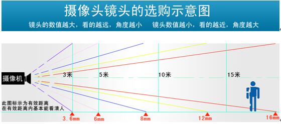
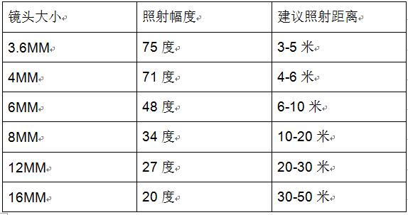
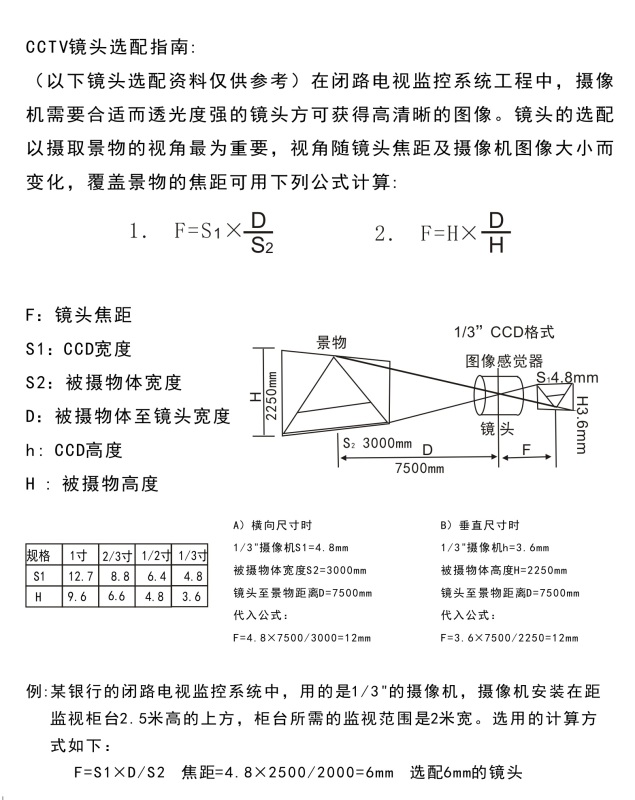

监控摄像头的镜头选择

镜头选配参考标准

在实际应用中，经常听到有用户提出诸如某摄像机能够“看多远”之类的问题，比如100m、500m甚至1km远外的物体还能否在监视器上清晰地显示出来。有了前面关于镜头的成像尺寸、焦距及视场角等概念后，这个问题就不难解释了，即“看多远”问题与许多因素有关。比如说，用某定焦镜头可以看清100m远处的钞票的面值。一般来说，镜头焦距越长，“看”得就越远，但同时视场角却变小，结果观看的范围变窄了。举个简单的例子，若用标准镜头刚好看清远处某人的基本特征（是男或是女），则换用长焦距镜头则可能看清其面部特征（是否有痣或疤），但却无法看见该人穿的是什么裤子和鞋（这部分已经“涨”出了画面），而换用广角镜头则只可能看到画面中有人（连男女都分辨不出），但却可看清该人在整个监视场景中的所处的位置，周围还有什么别的人物或参照物。因此，关于“看多远”的较为科学的说法应该是“在屏幕上成的像大小可对应于实际观测距离处多高或多宽的景物”。例如，用8mm镜头观测10m远处的景物，如果该处有10个人站成一排则刚好可横向充满整个监视器屏幕。
一般情况下，为了能够较为清楚的探测到监视范围内的目标并实现自动跟踪，一般要求在CCD靶面上的目标至少占有三行电视线。若要能分辨出人物，则一般应要求人物的面部成像在356mm（14in）监视器上占到12.7mm(0.5in)以上。
在实际应用中，经常会有用户提出该摄像机能看清楚多么远的物体或该摄像机能看清楚多宽的场景等问题，这实际上要由所选用的镜头的焦距来决定，另外还与所选择的摄像机的分辨率及监视器的分辨率有关。
光学系统的焦距是指光组主点到焦点的距离。而镜头的焦距实际上就是构成镜头的组合光组的焦距，它决定了摄取图像的大小，用不同焦距的镜头对同一位置的物体摄像时，配长焦距镜头的摄像机所摄取的景物尺寸就大，反之，配短焦距镜头的摄像机所摄取的景物尺寸就小。
理论上，任何一种镜头均可拍摄很远处的物体，并在摄像机的成像靶面上成一个很小的像，但受象素的限制，当成像小到小于图像传感器的一个象素大小时，便不再能形成被摄物体的像，即便成像有几个象素大小，该像也难以辨别为何物。那么如何选好镜头和照射距离请看一下参数和数据，从而让你在今后的摄像机选择中如鱼得水。
